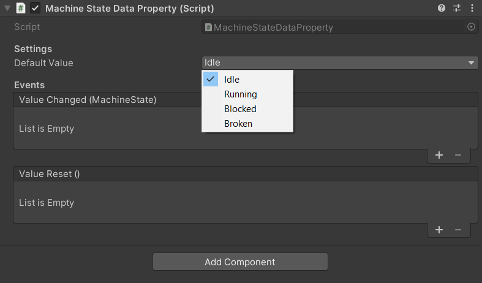
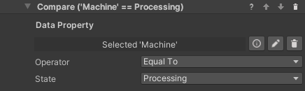

State Data Properties
Sometimes we need to simulate a complex behavior that is part of the environment rather than the process. For example, a machinery that can be idle, running, blocked or broken, or a door that can be locked, unlocked or open. In these case, it might make sense to code the object's logic directly with Unity Monobehaviors rather than trying to write very complex custom behaviors. This can also make sense if the object is independent from the process - for example, the machine will keep running regardless of the user's position in the process, or is designed to break randomly.
Maybe we only want VR Builder to decide when the machine starts running, or to trigger a step when it breaks, but we don't need it to be in control of what exact animation the object is into, or what sound it plays - these are characteristics that are intrinsical to the machine, so we shouldn't care about them in the process.
We can use a State Data Property as a communication layer between our VR Builder process and some custom logic we have written for an object. This is a data property which contains an enum listing all the states an object can be in. Like all data properties, it can be read and set both from the Step Inspector and from code. This allows your custom logic and the VR Builder process to interact with each other.
Creating a State Data Property
You will need to define your enum and create a state data property specific to it.
For the machinery described above, it could look like this.
public enum MachineState
{
Idle,
Running,
Blocked,
Broken,
}
We then need to create a data property component using this enum from the generic state data property. This is just a couple lines.
using VRBuilder.StatesAndData.Properties;
public class MachineStateDataProperty : StateDataProperty<MachineState>
{
}
We'll now be able to add this as a component to a game object. As it can be seen from the drop-down for the default value, it makes use of the MachineState enum.

Handling States in Code
We can read and modify states from code calling the GetState and SetState methods on the data property component.
MachineStateDataProperty stateDataProperty = GetComponent<MachineStateDataProperty>();
// Set a state to a specified value.
stateDataProperty.SetState(MachineState.Running);
// Read the current state.
MachineState state = stateDataProperty.GetState();
It is also possible to subscribe to the standard data property events ValueChanged and ValueReset, respectively called when the data property value changes or is reset to its default value.
MachineStateDataProperty stateDataProperty = GetComponent<MachineStateDataProperty>();
// Subscribe to the value changed event.
dataProperty.ValueChanged += OnValueChanged;
// Function to be called when the event is triggered.
private void OnValueChanged(object sender, EventArgs e)
{
// Code to be executed on value changed.
}
Set State Behavior
The Set State behavior can be used to change the property's state from the VR Builder process. It works very similarly to the Set Value behavior, the only difference being that the state drop-down will not be visible until a State Data Property is dragged in the inspector, as it depends on the provided enum.

It is also possible to use the Reset Value behavior on a State Data Property, it will work like any other data property.
Check State Condition
It is possible for a process to read a state and react accordingly using the Check State condition. This condition compares a State Data Property to a specified value, in a way similar to other conditions comparing values.

A number of operations are available. Since enum values can be ordered, it is also possible to check if the state precedes or follows the specified one.